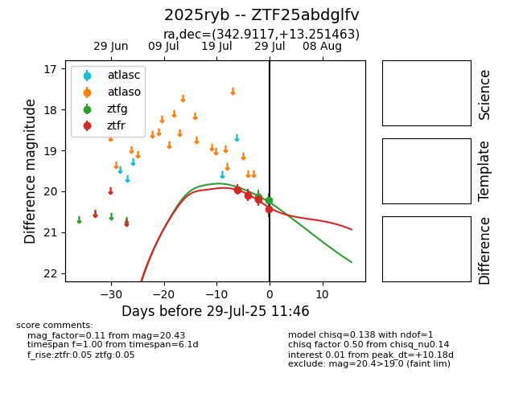

Target 2025ryb at 2025-07-29 11:46, see:
FINK: fink-portal.org/2025ryb
Lasair: lasair-ztf.lsst.ac.uk/objects/2025ryb
ALeRCE: alerce.online/object/2025ryb
TNS: wis-tns.org/object/2025ryb
YSE: ziggy.ucolick.org/yse/transient_detail/2025ryb
alt names
ZTF25abdglfv (ztf,fink)
2025ryb (tns,yse)
coordinates:
equatorial (ra, dec) = (342.9117,+13.25146)
galactic (l, b) = (83.3900,-40.24827)
photometry
last ztfg=20.22, ztfr=20.43
2 ztfg, 4 ztfr detections
